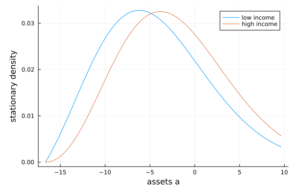

Application to a consumption-saving problem
The previous tutorials took the Markov process as given. In economic models, the process is usually chosen: a household picks consumption, a firm picks investment, and the law of motion of the state depends on that policy. The value function then solves a nonlinear Hamilton–Jacobi–Bellman equation.
The workhorse method for these problems in economics — Achdou, Han, Lasry, Lions, and Moll (2022), "Income and wealth distribution in macroeconomics: a continuous-time approach" — never calls a nonlinear solver. Each iteration resolves the nonlinearity pointwise (a first-order condition plus an upwind choice) and then takes one linear implicit time step. The linear objects it needs — upwind derivatives, the generator matrix of the policy-implied process, its transpose for the distribution — are exactly what this package provides. This tutorial replicates the method, and ends with EconPDEs.jl, which packages a more robust version of the same iteration.
The model
A household saves in a riskless asset $a$ at rate $r$ and earns an income that switches between $y_l$ and $y_h$ as a two-state Poisson process with intensities $\lambda_{lh}, \lambda_{hl}$. With CRRA utility and discount rate $\rho$, the value functions $v_l(a), v_h(a)$ solve the coupled HJB equations
\[\rho v_j(a) = \max_c \, u(c) + v_j'(a) (y_j + r a - c) + \lambda_{jk} (v_k(a) - v_j(a)),\]
subject to the borrowing constraint $a \geq \underline{a}$.
using InfinitesimalGenerators, LinearAlgebra
yl, yh = 0.5, 1.5 # income states
λlh, λhl = 0.2, 0.2 # switching intensities
r, ρ, γ = 0.03, 0.04, 2.0 # interest rate, discount rate, risk aversion
amin, amax = -yl / r + 0.001, 50.0
as = amin .+ range(0, (amax - amin)^(1 / 2), length = 200) .^ 2 # finer near the constraint
Z = ContinuousTimeMarkovChain([yl, yh], [-λlh λlh; λhl -λhl])
u(c) = c^(1 - γ) / (1 - γ)The implicit scheme
Discretize $a$ on a grid and stack the value functions into v (one column per income state). The discretized HJB is then a system
\[\rho v = u(c(v)) + \mathbb{A}(c(v)) \, v,\]
nonlinear only through the policy $c(v)$. The key trick of the scheme is where the policy is evaluated: compute $c_n = c(v_n)$ from the current guess, freeze it, and take one backward time step of the equation that is now linear in the new value $v_{n+1}$:
\[\left(\left(\rho + \tfrac{1}{\Delta}\right) I - \mathbb{A}(c_n)\right) v_{n+1} = u(c_n) + \tfrac{1}{\Delta} v_n.\]
Each iteration therefore has three steps, and only the last one is a solve — a linear one; no nonlinear solver appears anywhere:
- The policy from the current guess. The first-order condition $u'(c) = v_j'(a)$ pins down consumption, with the finite difference chosen by the upwind rule: the forward difference where the implied saving is positive, the backward difference where it is negative, and $c = y_j + ra$ at a point where neither is consistent (the drift is zero there). The borrowing constraint never needs to be imposed explicitly: it enters through the boundary condition $v_j'(\underline{a}) = u'(y_j + r\underline{a})$ on the backward difference — the
bckeyword ofFirstDerivative. - The generator under that policy: assets drift at rate $y + ra - c$ within each income state (a zero-volatility
DiffusionProcessper state), and income switches according toZ— together, aSwitchingProcess. - One implicit time step: a single sparse linear solve.
v0 = [u(y + r * a) / ρ for a in as, y in (yl, yh)] # guess: consume the budget forever
v = copy(v0)
c = similar(v)
Δ, tol = 1000.0, 1e-8
for iter in 1:1000
# 1. the policy implied by the current guess, chosen by upwinding
for (j, y) in enumerate((yl, yh))
bc = ((y + r * amin)^(-γ), 0) # borrowing constraint at amin; reflecting at amax
va_up = FirstDerivative(as, view(v, :, j); direction = :forward, bc = bc)
va_down = FirstDerivative(as, view(v, :, j); direction = :backward, bc = bc)
for i in eachindex(as)
budget = y + r * as[i]
# clamp marginal values: the iteration can visit v with negative differences
c_up, c_down = max(va_up[i], 1e-10)^(-1 / γ), max(va_down[i], 1e-10)^(-1 / γ)
if budget - c_up >= 0 # positive drift: use the forward difference
c[i, j] = c_up
elseif budget - c_down <= 0 # negative drift: use the backward difference
c[i, j] = c_down
else # steady point: consume the budget
c[i, j] = budget
end
end
end
# 2. the Markov process for (a, y) implied by this policy
μa = [y + r * a for a in as, y in (yl, yh)] .- c
global X = SwitchingProcess(Z, [DiffusionProcess(as, μa[:, 1], zeros(length(as))),
DiffusionProcess(as, μa[:, 2], zeros(length(as)))])
# 3. one implicit time step: a linear solve in the new value
vnew = reshape(((ρ + 1 / Δ) * I - generator(X)) \ vec(u.(c) .+ v ./ Δ), size(v))
if maximum(abs, vnew - v) < tol
v .= vnew
println("converged in $iter iterations")
break
end
v .= vnew
endconverged in 12 iterationsAt a fixed point $v_{n+1} = v_n$, the $\Delta$ terms cancel and the exact discretized HJB holds, with a policy consistent with the value function.
The code above closely follows the reference Matlab implementation huggett_partialeq.m from Ben Moll's code library: the same upwind rule, the same implicit step, the same treatment of the borrowing constraint.
The stationary distribution
Step 2 of the iteration builds a Markov process for the household's state $(a, y)$ — a SwitchingProcess over two zero-volatility DiffusionProcesses, the same objects as in the previous tutorials. The X left behind by the last iteration is that process evaluated at the solved policy: the equilibrium wealth process. The matrix that was just used to solve the HJB is, at the fixed point, the generator of the model's cross-sectional dynamics, so everything from the previous tutorials applies to it directly — in particular the stationary wealth distribution is one more linear solve:
using Plots
g = stationary_distribution(X)
Δa = (as[[2:end; end]] .- as[[1; 1:(end - 1)]]) ./ 2 # cell widths of the non-uniform grid
idx = as .<= 10
plot(as[idx], (g ./ Δa)[idx, :];
label = ["low income" "high income"], xlabel = "assets a", ylabel = "stationary density")
As everywhere in the package, g holds probability masses — sum(g) == 1 with no grid weights — so aggregates are unweighted dot products like sum(g .* c) below. Plotting is the one place masses are the wrong units: on a non-uniform grid, raw masses trace the grid spacing rather than the shape of the distribution, so the plot divides by the cell widths to convert to a density. (Moll's codes use the opposite convention: there g holds density values, normalized and aggregated with da weights.)
Low-income households dissave toward the borrowing limit; high-income households accumulate. And because the same discretized generator prices the value function and transports the distribution, aggregate consumption equals aggregate income to machine precision rather than up to discretization error:
C = sum(g .* c)
Y = sum(g .* [y + r * a for a in as, y in (yl, yh)])
C - Y3.3306690738754696e-16EconPDEs.jl: the robust version
The scheme above buys linearity by evaluating the policy at the lagged guess: the step solves for $v_{n+1}$ under the policy implied by $v_n$. The alternative — the fully implicit step — evaluates the policy at the new guess:
\[\left(\left(\rho + \tfrac{1}{\Delta}\right) I - \mathbb{A}(c(v_{n+1}))\right) v_{n+1} = u(c(v_{n+1})) + \tfrac{1}{\Delta} v_n.\]
The unknown now appears inside the policy, so each time step is a genuine nonlinear system, solved with Newton's method. This is what EconPDEs.jl implements, and it is what you want once the equation is more nonlinear than this tutorial's.
With the lagged policy and a fixed $\Delta$, nothing forces the update to make progress: in highly nonlinear models the policy and the value can chase each other, and the iteration oscillates or diverges unless $\Delta$ and the initial guess are hand-tuned. The fully implicit step behaves better at both ends: for small $\Delta$ it tracks the time-dependent equation, which converges whenever the stationary solution is stable, and as $\Delta \to \infty$ it becomes a pure Newton solve of the stationary equation, with quadratic convergence near the solution. Adapting $\Delta$ — shrinking it when a Newton step fails, growing it when it succeeds — therefore converges without hand-tuning in practice. This adaptive scheme is pseudo-transient continuation, a standard method for stiff nonlinear PDEs in fluid dynamics; Kelley and Keyes (1998) give formal convergence conditions.
EconPDEs also assembles the sparse Jacobian automatically from the grid stencil, so none of the matrices above have to be derived by hand, and the same code path handles multiple value functions, algebraic equations, and two- or three-dimensional state spaces.
You write only the equation at a single grid point, with named upwind derivatives — note that the policy inside is a function of the same value bundle being solved for:
using EconPDEs
function household(state, value)
(; a) = state
(; vl, vla_up, vla_down, vh, vha_up, vha_down) = value
function upwind(y, va_up, va_down)
budget = y + r * a
c_up, c_down = max(va_up, 1e-10)^(-1 / γ), max(va_down, 1e-10)^(-1 / γ)
if budget - c_up >= 0
(c_up, va_up)
elseif budget - c_down <= 0 && a > amin
(c_down, va_down)
else
(budget, budget^(-γ))
end
end
cl, vla = upwind(yl, vla_up, vla_down)
ch, vha = upwind(yh, vha_up, vha_down)
vlt = -(u(cl) + (yl + r * a - cl) * vla + λlh * (vh - vl) - ρ * vl)
vht = -(u(ch) + (yh + r * a - ch) * vha + λhl * (vl - vh) - ρ * vh)
return (; vlt, vht)
end
result = pdesolve(household, (; a = as), (; vl = v0[:, 1], vh = v0[:, 2]); verbose = false)
maximum(abs, [result.zero[:vl] result.zero[:vh]] - v)8.32369551062584e-9The two methods find the same fixed point, because they discretize the equation identically. For the full workflow in the other direction — solve with pdesolve, then hand the policy-implied process back to this package for distributions and expectations — see the InfinitesimalGenerators page of the EconPDEs documentation.